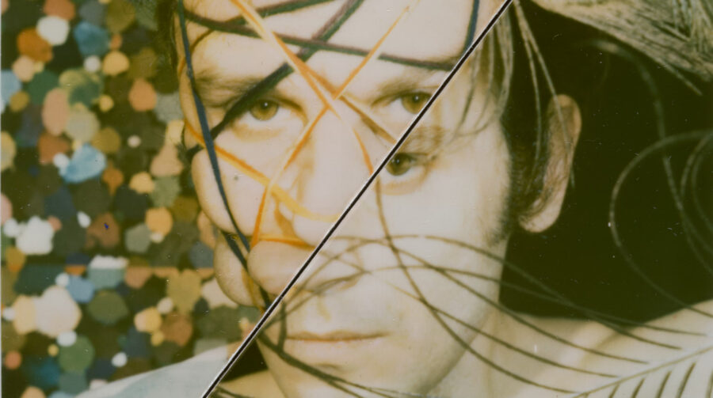

Lucas Samaras: Sitting, Standing, Walking, Looking
Over seven decades, Lucas Samaras developed an utterly unique approach to art making. While he experimented with a wide range of materials, his own body and belongings were the primary subject of his photographs, sculptures, and drawings.
Samaras was born in Greece and as a boy he witnessed the Greek Civil War firsthand. Art making became an escape from the war’s horrors and the way it complicated his family dynamic. While his father moved to New Jersey, he and his mother stayed in Greece for nine years. The family didn’t reunite until Samaras was 12 and moved with his mother to the US.
Following his youth in Greece, Samaras’s work was also deeply influenced by his participation in ”happenings,” live artworks that combined installation and performance that emerged in New York in the late 1950s and 1960s.
This exhibition focuses on Samaras’s innovative photographs, which unite his background in performance and his technical achievements with instant process film, particularly Polaroid. This brand-name film produced a negative and positive simultaneously, eliminating the need for a darkroom or external processing. Such independence and privacy appealed to Samaras who wanted to make pictures of himself in his own home without involving others. The artist, however, didn’t use the mass-marketed film in a straightforward manner but really pushed its limits, frequently moving the color pigment around to shapeshift his body, blur the boundary between himself and his surroundings, and radically restructure his compositions.
The presentation, which is drawn from the Art Institute of Chicago’s collection, also includes sculptures and paintings recently gifted to the museum by the Samaras Estate. These works offer a glimpse into his broader practice and his commitment to cultivating his home-studio as a kind of artwork itself. Together the assembled works invite us into Samaras’s creative, engaged, and focused life, one built through transforming everyday objects and actions through ceaseless artistic exploration.